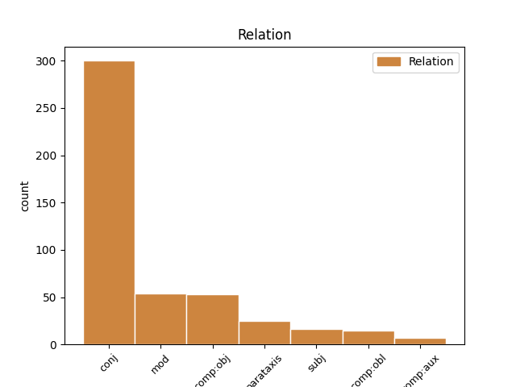
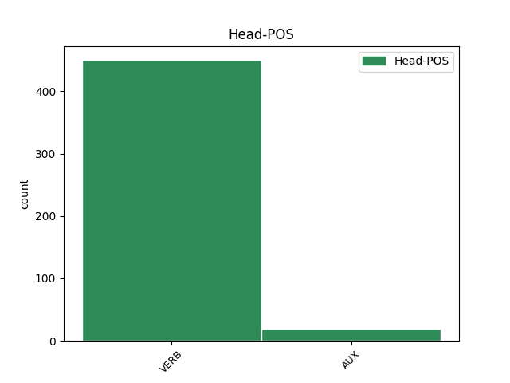
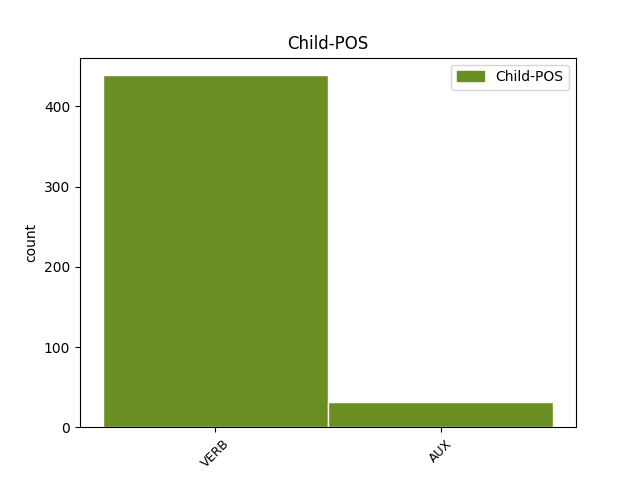

Distribution of features within this leaf



Agreement Rules sorted by frequency.
- When the dependent token is the conjunct(conj) of the head token, and the dependent token is VERB.
1 A _ _ _ _ 0 _ _ _
2 magukat _ _ _ _ 0 _ _ _
3 nyeregben _ _ _ _ 0 _ _ _
4 érző _ _ _ _ 0 _ _ _
5 albánok _ _ _ _ 0 _ _ _
6 azonnal _ _ _ _ 0 _ _ _
7 elvetették elvet VERB _ Definite=Def|Mood=Ind|Number=Plur|Person=3|Tense=Past|VerbForm=Fin|Voice=Act 0 _ _ _
8 a _ _ _ _ 0 _ _ _
9 kantonizáció _ _ _ _ 0 _ _ _
10 tervét _ _ _ _ 0 _ _ _
11 , _ _ _ _ 0 _ _ _
12 s _ _ _ _ 0 _ _ _
13 Hasim _ _ _ _ 0 _ _ _
14 Thaci _ _ _ _ 0 _ _ _
15 , _ _ _ _ 0 _ _ _
16 a _ _ _ _ 0 _ _ _
17 Koszovói _ _ _ _ 0 _ _ _
18 Felszabadítási _ _ _ _ 0 _ _ _
19 Hadsereg _ _ _ _ 0 _ _ _
20 ( _ _ _ _ 0 _ _ _
21 UCK _ _ _ _ 0 _ _ _
22 ) _ _ _ _ 0 _ _ _
23 vezetője _ _ _ _ 0 _ _ _
24 és _ _ _ _ 0 _ _ _
25 a _ _ _ _ 0 _ _ _
26 világ _ _ _ _ 0 _ _ _
27 által _ _ _ _ 0 _ _ _
28 még _ _ _ _ 0 _ _ _
29 el _ _ _ _ 0 _ _ _
30 nem _ _ _ _ 0 _ _ _
31 ismert _ _ _ _ 0 _ _ _
32 koszovói _ _ _ _ 0 _ _ _
33 kormány _ _ _ _ 0 _ _ _
34 első _ _ _ _ 0 _ _ _
35 embere _ _ _ _ 0 _ _ _
36 közölte közöl VERB _ Definite=Def|Mood=Ind|Number=Sing|Person=3|Tense=Past|VerbForm=Fin|Voice=Act 7 conj _ SpaceAfter=No
37 : _ _ _ _ 0 _ _ _
38 nincs _ _ _ _ 0 _ _ _
39 idő _ _ _ _ 0 _ _ _
40 a _ _ _ _ 0 _ _ _
41 megosztásról _ _ _ _ 0 _ _ _
42 tárgyalni _ _ _ _ 0 _ _ _
43 , _ _ _ _ 0 _ _ _
44 s _ _ _ _ 0 _ _ _
45 aki _ _ _ _ 0 _ _ _
46 erről _ _ _ _ 0 _ _ _
47 a _ _ _ _ 0 _ _ _
48 kérdésről _ _ _ _ 0 _ _ _
49 akar _ _ _ _ 0 _ _ _
50 vitatkozni _ _ _ _ 0 _ _ _
51 , _ _ _ _ 0 _ _ _
52 az _ _ _ _ 0 _ _ _
53 menjen _ _ _ _ 0 _ _ _
54 el _ _ _ _ 0 _ _ _
55 Belgrádba _ _ _ _ 0 _ _ _
56 , _ _ _ _ 0 _ _ _
57 a _ _ _ _ 0 _ _ _
58 tudományos _ _ _ _ 0 _ _ _
59 akadémiára _ _ _ _ 0 _ _ _
60 . _ _ _ _ 0 _ _ _
1 " _ _ _ _ 0 _ _ _
2 Tudom _ _ _ _ 0 _ _ _
3 , _ _ _ _ 0 _ _ _
4 hogy _ _ _ _ 0 _ _ _
5 hamarosan _ _ _ _ 0 _ _ _
6 mennem _ _ _ _ 0 _ _ _
7 kell _ _ _ _ 0 _ _ _
8 . _ _ _ _ 0 _ _ _
9 A _ _ _ _ 0 _ _ _
10 Kfor _ _ _ _ 0 _ _ _
11 ugyan _ _ _ _ 0 _ _ _
12 valóban _ _ _ _ 0 _ _ _
13 járőrözik _ _ _ _ 0 _ _ _
14 a _ _ _ _ 0 _ _ _
15 városban _ _ _ _ 0 _ _ _
16 , _ _ _ _ 0 _ _ _
17 ám _ _ _ _ 0 _ _ _
18 a _ _ _ _ 0 _ _ _
19 rossz _ _ _ _ 0 _ _ _
20 szándékú _ _ _ _ 0 _ _ _
21 emberek _ _ _ _ 0 _ _ _
22 óvatosak _ _ _ _ 0 _ _ _
23 , _ _ _ _ 0 _ _ _
24 s _ _ _ _ 0 _ _ _
25 mindig _ _ _ _ 0 _ _ _
26 akkor _ _ _ _ 0 _ _ _
27 jönnek jön VERB _ Definite=Ind|Mood=Ind|Number=Plur|Person=3|Tense=Pres|VerbForm=Fin|Voice=Act 0 _ _ _
28 , _ _ _ _ 0 _ _ _
29 amikor _ _ _ _ 0 _ _ _
30 a _ _ _ _ 0 _ _ _
31 békefenntartók _ _ _ _ 0 _ _ _
32 nincsenek nincs VERB _ Definite=Ind|Mood=Ind|Number=Plur|Person=3|Tense=Pres|VerbForm=Fin|Voice=Act 27 mod _ _
33 már _ _ _ _ 0 _ _ _
34 a _ _ _ _ 0 _ _ _
35 környéken _ _ _ _ 0 _ _ _
36 " _ _ _ _ 0 _ _ _
37 — _ _ _ _ 0 _ _ _
38 idézte _ _ _ _ 0 _ _ _
39 a _ _ _ _ 0 _ _ _
40 Reuter _ _ _ _ 0 _ _ _
41 az _ _ _ _ 0 _ _ _
42 egyik _ _ _ _ 0 _ _ _
43 pristinai _ _ _ _ 0 _ _ _
44 szerb _ _ _ _ 0 _ _ _
45 asszonyt _ _ _ _ 0 _ _ _
46 . _ _ _ _ 0 _ _ _
1 A _ _ _ _ 0 _ _ _
2 magukat _ _ _ _ 0 _ _ _
3 nyeregben _ _ _ _ 0 _ _ _
4 érző _ _ _ _ 0 _ _ _
5 albánok _ _ _ _ 0 _ _ _
6 azonnal _ _ _ _ 0 _ _ _
7 elvetették _ _ _ _ 0 _ _ _
8 a _ _ _ _ 0 _ _ _
9 kantonizáció _ _ _ _ 0 _ _ _
10 tervét _ _ _ _ 0 _ _ _
11 , _ _ _ _ 0 _ _ _
12 s _ _ _ _ 0 _ _ _
13 Hasim _ _ _ _ 0 _ _ _
14 Thaci _ _ _ _ 0 _ _ _
15 , _ _ _ _ 0 _ _ _
16 a _ _ _ _ 0 _ _ _
17 Koszovói _ _ _ _ 0 _ _ _
18 Felszabadítási _ _ _ _ 0 _ _ _
19 Hadsereg _ _ _ _ 0 _ _ _
20 ( _ _ _ _ 0 _ _ _
21 UCK _ _ _ _ 0 _ _ _
22 ) _ _ _ _ 0 _ _ _
23 vezetője _ _ _ _ 0 _ _ _
24 és _ _ _ _ 0 _ _ _
25 a _ _ _ _ 0 _ _ _
26 világ _ _ _ _ 0 _ _ _
27 által _ _ _ _ 0 _ _ _
28 még _ _ _ _ 0 _ _ _
29 el _ _ _ _ 0 _ _ _
30 nem _ _ _ _ 0 _ _ _
31 ismert _ _ _ _ 0 _ _ _
32 koszovói _ _ _ _ 0 _ _ _
33 kormány _ _ _ _ 0 _ _ _
34 első _ _ _ _ 0 _ _ _
35 embere _ _ _ _ 0 _ _ _
36 közölte közöl VERB _ Definite=Def|Mood=Ind|Number=Sing|Person=3|Tense=Past|VerbForm=Fin|Voice=Act 0 _ _ _
37 : _ _ _ _ 0 _ _ _
38 nincs nincs VERB _ Definite=Ind|Mood=Ind|Number=Sing|Person=3|Tense=Pres|VerbForm=Fin|Voice=Act 36 comp:obj _ _
39 idő _ _ _ _ 0 _ _ _
40 a _ _ _ _ 0 _ _ _
41 megosztásról _ _ _ _ 0 _ _ _
42 tárgyalni _ _ _ _ 0 _ _ _
43 , _ _ _ _ 0 _ _ _
44 s _ _ _ _ 0 _ _ _
45 aki _ _ _ _ 0 _ _ _
46 erről _ _ _ _ 0 _ _ _
47 a _ _ _ _ 0 _ _ _
48 kérdésről _ _ _ _ 0 _ _ _
49 akar _ _ _ _ 0 _ _ _
50 vitatkozni _ _ _ _ 0 _ _ _
51 , _ _ _ _ 0 _ _ _
52 az _ _ _ _ 0 _ _ _
53 menjen _ _ _ _ 0 _ _ _
54 el _ _ _ _ 0 _ _ _
55 Belgrádba _ _ _ _ 0 _ _ _
56 , _ _ _ _ 0 _ _ _
57 a _ _ _ _ 0 _ _ _
58 tudományos _ _ _ _ 0 _ _ _
59 akadémiára _ _ _ _ 0 _ _ _
60 . _ _ _ _ 0 _ _ _
1 A _ _ _ _ 0 _ _ _
2 szlovák _ _ _ _ 0 _ _ _
3 szociáldemokraták _ _ _ _ 0 _ _ _
4 , _ _ _ _ 0 _ _ _
5 akiknek _ _ _ _ 0 _ _ _
6 pártját _ _ _ _ 0 _ _ _
7 haláláig _ _ _ _ 0 _ _ _
8 Alexander _ _ _ _ 0 _ _ _
9 Dubcek _ _ _ _ 0 _ _ _
10 vezette _ _ _ _ 0 _ _ _
11 , _ _ _ _ 0 _ _ _
12 az _ _ _ _ 0 _ _ _
13 1992. _ _ _ _ 0 _ _ _
14 szeptember _ _ _ _ 0 _ _ _
15 elsejei _ _ _ _ 0 _ _ _
16 végzetes _ _ _ _ 0 _ _ _
17 autóbaleset _ _ _ _ 0 _ _ _
18 óta _ _ _ _ 0 _ _ _
19 nem _ _ _ _ 0 _ _ _
20 tudják _ _ _ _ 0 _ _ _
21 elfogadni _ _ _ _ 0 _ _ _
22 azt _ _ _ _ 0 _ _ _
23 a _ _ _ _ 0 _ _ _
24 hivatalos _ _ _ _ 0 _ _ _
25 verziót _ _ _ _ 0 _ _ _
26 , _ _ _ _ 0 _ _ _
27 amelyet _ _ _ _ 0 _ _ _
28 a _ _ _ _ 0 _ _ _
29 Ceské _ _ _ _ 0 _ _ _
30 Budejovice-i _ _ _ _ 0 _ _ _
31 bíróság _ _ _ _ 0 _ _ _
32 1993. _ _ _ _ 0 _ _ _
33 évi _ _ _ _ 0 _ _ _
34 ítélete _ _ _ _ 0 _ _ _
35 szentesített szentesít VERB _ Definite=Ind|Mood=Ind|Number=Sing|Person=3|Tense=Past|VerbForm=Fin|Voice=Act 0 _ _ _
36 : _ _ _ _ 0 _ _ _
37 szerencsétlenség _ _ _ _ 0 _ _ _
38 történt történik VERB _ Definite=Ind|Mood=Ind|Number=Sing|Person=3|Tense=Past|VerbForm=Fin|Voice=Act 35 parataxis _ SpaceAfter=No
39 , _ _ _ _ 0 _ _ _
40 s _ _ _ _ 0 _ _ _
41 ezért _ _ _ _ 0 _ _ _
42 a _ _ _ _ 0 _ _ _
43 szlovák _ _ _ _ 0 _ _ _
44 politikus _ _ _ _ 0 _ _ _
45 gépkocsivezetőjét _ _ _ _ 0 _ _ _
46 , _ _ _ _ 0 _ _ _
47 Ján _ _ _ _ 0 _ _ _
48 Rezníket _ _ _ _ 0 _ _ _
49 jogerősen _ _ _ _ 0 _ _ _
50 egyévi _ _ _ _ 0 _ _ _
51 , _ _ _ _ 0 _ _ _
52 letöltendő _ _ _ _ 0 _ _ _
53 fegyházbüntetésre _ _ _ _ 0 _ _ _
54 ítélték _ _ _ _ 0 _ _ _
55 . _ _ _ _ 0 _ _ _
1 A _ _ _ _ 0 _ _ _
2 tervezet _ _ _ _ 0 _ _ _
3 értelmében _ _ _ _ 0 _ _ _
4 Koszovó _ _ _ _ 0 _ _ _
5 északi _ _ _ _ 0 _ _ _
6 , _ _ _ _ 0 _ _ _
7 Szerbiával _ _ _ _ 0 _ _ _
8 határos _ _ _ _ 0 _ _ _
9 részei _ _ _ _ 0 _ _ _
10 kerülnének kerül VERB _ Definite=Ind|Mood=Cnd|Number=Plur|Person=3|Tense=Pres|VerbForm=Fin|Voice=Act 0 _ _ _
11 szerb _ _ _ _ 0 _ _ _
12 irányítás _ _ _ _ 0 _ _ _
13 alá _ _ _ _ 0 _ _ _
14 , _ _ _ _ 0 _ _ _
15 s _ _ _ _ 0 _ _ _
16 a _ _ _ _ 0 _ _ _
17 szerb _ _ _ _ 0 _ _ _
18 kantonoknak _ _ _ _ 0 _ _ _
19 Kosovska _ _ _ _ 0 _ _ _
20 Mitrovica _ _ _ _ 0 _ _ _
21 és _ _ _ _ 0 _ _ _
22 Gnjilane _ _ _ _ 0 _ _ _
23 lenne lesz AUX _ Definite=Ind|Mood=Cnd|Number=Sing|Person=3|Tense=Pres|VerbForm=Fin|Voice=Act 10 conj _ _
24 a _ _ _ _ 0 _ _ _
25 központja _ _ _ _ 0 _ _ _
26 . _ _ _ _ 0 _ _ _
1 " _ _ _ _ 0 _ _ _
2 Ami _ _ _ _ 0 _ _ _
3 történt történik VERB _ Definite=Ind|Mood=Ind|Number=Sing|Person=3|Tense=Past|VerbForm=Fin|Voice=Act 8 subj _ SpaceAfter=No
4 , _ _ _ _ 0 _ _ _
5 oly _ _ _ _ 0 _ _ _
6 mély _ _ _ _ 0 _ _ _
7 sebeket _ _ _ _ 0 _ _ _
8 ejtett ejt VERB _ Definite=Ind|Mood=Ind|Number=Sing|Person=3|Tense=Past|VerbForm=Fin|Voice=Act 0 _ _ _
9 — _ _ _ _ 0 _ _ _
10 írta _ _ _ _ 0 _ _ _
11 a _ _ _ _ 0 _ _ _
12 Radikal _ _ _ _ 0 _ _ _
13 című _ _ _ _ 0 _ _ _
14 lap _ _ _ _ 0 _ _ _
15 szemleírója _ _ _ _ 0 _ _ _
16 , _ _ _ _ 0 _ _ _
17 Erol _ _ _ _ 0 _ _ _
18 Katircioglu _ _ _ _ 0 _ _ _
19 — _ _ _ _ 0 _ _ _
20 , _ _ _ _ 0 _ _ _
21 hogy _ _ _ _ 0 _ _ _
22 a _ _ _ _ 0 _ _ _
23 földrengés _ _ _ _ 0 _ _ _
24 után _ _ _ _ 0 _ _ _
25 Törökország _ _ _ _ 0 _ _ _
26 már _ _ _ _ 0 _ _ _
27 soha _ _ _ _ 0 _ _ _
28 nem _ _ _ _ 0 _ _ _
29 lesz _ _ _ _ 0 _ _ _
30 az _ _ _ _ 0 _ _ _
31 , _ _ _ _ 0 _ _ _
32 ami _ _ _ _ 0 _ _ _
33 előtte _ _ _ _ 0 _ _ _
34 volt _ _ _ _ 0 _ _ _
35 . _ _ _ _ 0 _ _ _
36 " _ _ _ _ 0 _ _ _
1 Az _ _ _ _ 0 _ _ _
2 attasét _ _ _ _ 0 _ _ _
3 ekkor _ _ _ _ 0 _ _ _
4 megkereste _ _ _ _ 0 _ _ _
5 egy _ _ _ _ 0 _ _ _
6 szovjet _ _ _ _ 0 _ _ _
7 titkosszolgálati _ _ _ _ 0 _ _ _
8 tiszt _ _ _ _ 0 _ _ _
9 , _ _ _ _ 0 _ _ _
10 aki _ _ _ _ 0 _ _ _
11 a _ _ _ _ 0 _ _ _
12 nő _ _ _ _ 0 _ _ _
13 férjének _ _ _ _ 0 _ _ _
14 adta _ _ _ _ 0 _ _ _
15 ki _ _ _ _ 0 _ _ _
16 magát _ _ _ _ 0 _ _ _
17 , _ _ _ _ 0 _ _ _
18 és _ _ _ _ 0 _ _ _
19 megfenyegette meg+fenyeget VERB _ Definite=Def|Mood=Ind|Number=Sing|Person=3|Tense=Past|VerbForm=Fin|Voice=Act 0 _ _ _
20 Babiucot _ _ _ _ 0 _ _ _
21 : _ _ _ _ 0 _ _ _
22 botrányt _ _ _ _ 0 _ _ _
23 csinál csinál VERB _ Definite=Ind|Mood=Ind|Number=Sing|Person=3|Tense=Pres|VerbForm=Fin|Voice=Act 19 comp:obl _ SpaceAfter=No
24 . _ _ _ _ 0 _ _ _
1 Sőt _ _ _ _ 0 _ _ _
2 még _ _ _ _ 0 _ _ _
3 ha _ _ _ _ 0 _ _ _
4 marad _ _ _ _ 0 _ _ _
5 is _ _ _ _ 0 _ _ _
6 Saarbrückenben _ _ _ _ 0 _ _ _
7 az _ _ _ _ 0 _ _ _
8 SPD-többség _ _ _ _ 0 _ _ _
9 , _ _ _ _ 0 _ _ _
10 akkor _ _ _ _ 0 _ _ _
11 sem _ _ _ _ 0 _ _ _
12 biztos _ _ _ _ 0 _ _ _
13 a _ _ _ _ 0 _ _ _
14 győzelem _ _ _ _ 0 _ _ _
15 , _ _ _ _ 0 _ _ _
16 Reinhard _ _ _ _ 0 _ _ _
17 Klimmt _ _ _ _ 0 _ _ _
18 szociáldemokrata _ _ _ _ 0 _ _ _
19 tartományi _ _ _ _ 0 _ _ _
20 miniszterelnök _ _ _ _ 0 _ _ _
21 ugyanis _ _ _ _ 0 _ _ _
22 kilátásba _ _ _ _ 0 _ _ _
23 helyezte helyez VERB _ Definite=Def|Mood=Ind|Number=Sing|Person=3|Tense=Past|VerbForm=Fin|Voice=Act 0 _ _ _
24 : _ _ _ _ 0 _ _ _
25 ha _ _ _ _ 0 _ _ _
26 újraválasztják _ _ _ _ 0 _ _ _
27 , _ _ _ _ 0 _ _ _
28 ő _ _ _ _ 0 _ _ _
29 sem _ _ _ _ 0 _ _ _
30 fogja fog AUX _ Definite=Def|Mood=Ind|Number=Sing|Person=3|Tense=Pres|VerbForm=Fin|Voice=Act 23 comp:obj _ _
31 támogatni _ _ _ _ 0 _ _ _
32 az _ _ _ _ 0 _ _ _
33 Eichel-csomagot _ _ _ _ 0 _ _ _
34 . _ _ _ _ 0 _ _ _
1 A _ _ _ _ 0 _ _ _
2 Corso _ _ _ _ 0 _ _ _
3 talpra _ _ _ _ 0 _ _ _
4 állítása _ _ _ _ 0 _ _ _
5 a _ _ _ _ 0 _ _ _
6 társaságot _ _ _ _ 0 _ _ _
7 1994-ben _ _ _ _ 0 _ _ _
8 privatizáló _ _ _ _ 0 _ _ _
9 — _ _ _ _ 0 _ _ _
10 a _ _ _ _ 0 _ _ _
11 cég _ _ _ _ 0 _ _ _
12 vezetőiből _ _ _ _ 0 _ _ _
13 és _ _ _ _ 0 _ _ _
14 alkalmazottaiból _ _ _ _ 0 _ _ _
15 álló _ _ _ _ 0 _ _ _
16 — _ _ _ _ 0 _ _ _
17 konzorciumnak _ _ _ _ 0 _ _ _
18 sem _ _ _ _ 0 _ _ _
19 sikerült sikerül VERB _ Definite=Ind|Mood=Ind|Number=Sing|Person=3|Tense=Past|VerbForm=Fin|Voice=Act 0 _ _ _
20 ( _ _ _ _ 0 _ _ _
21 a _ _ _ _ 0 _ _ _
22 vételár _ _ _ _ 0 _ _ _
23 mindössze _ _ _ _ 0 _ _ _
24 198 _ _ _ _ 0 _ _ _
25 millió _ _ _ _ 0 _ _ _
26 forint _ _ _ _ 0 _ _ _
27 volt van AUX _ Definite=Ind|Mood=Ind|Number=Sing|Person=3|Tense=Past|VerbForm=Fin|Voice=Act 19 parataxis _ SpaceAfter=No
28 , _ _ _ _ 0 _ _ _
29 amelynek _ _ _ _ 0 _ _ _
30 csak _ _ _ _ 0 _ _ _
31 a _ _ _ _ 0 _ _ _
32 30 _ _ _ _ 0 _ _ _
33 százalékát _ _ _ _ 0 _ _ _
34 kellett _ _ _ _ 0 _ _ _
35 készpénzben _ _ _ _ 0 _ _ _
36 kifizetni _ _ _ _ 0 _ _ _
37 ) _ _ _ _ 0 _ _ _
38 . _ _ _ _ 0 _ _ _
1 A _ _ _ _ 0 _ _ _
2 hét _ _ _ _ 0 _ _ _
3 végén _ _ _ _ 0 _ _ _
4 több _ _ _ _ 0 _ _ _
5 mint _ _ _ _ 0 _ _ _
6 két _ _ _ _ 0 _ _ _
7 tucat _ _ _ _ 0 _ _ _
8 SPD-s _ _ _ _ 0 _ _ _
9 képviselő _ _ _ _ 0 _ _ _
10 írta _ _ _ _ 0 _ _ _
11 alá _ _ _ _ 0 _ _ _
12 azt _ _ _ _ 0 _ _ _
13 a _ _ _ _ 0 _ _ _
14 memorandumot _ _ _ _ 0 _ _ _
15 , _ _ _ _ 0 _ _ _
16 amelyben _ _ _ _ 0 _ _ _
17 egész _ _ _ _ 0 _ _ _
18 egyszerűen _ _ _ _ 0 _ _ _
19 megfenyegetik megfenyeget VERB _ Definite=Def|Mood=Ind|Number=Plur|Person=3|Tense=Pres|VerbForm=Fin|Voice=Act 0 _ _ _
20 Schrödert _ _ _ _ 0 _ _ _
21 , _ _ _ _ 0 _ _ _
22 nem _ _ _ _ 0 _ _ _
23 fogják fog AUX _ Definite=Def|Mood=Ind|Number=Plur|Person=3|Tense=Pres|VerbForm=Fin|Voice=Act 19 comp:obl _ _
24 megszavazni _ _ _ _ 0 _ _ _
25 a _ _ _ _ 0 _ _ _
26 "Jövőprogram _ _ _ _ 0 _ _ _
27 2000"-nek _ _ _ _ 0 _ _ _
28 elkeresztelt _ _ _ _ 0 _ _ _
29 takarékossági _ _ _ _ 0 _ _ _
30 csomagtervet _ _ _ _ 0 _ _ _
31 , _ _ _ _ 0 _ _ _
32 ha _ _ _ _ 0 _ _ _
33 nem _ _ _ _ 0 _ _ _
34 változtatnak _ _ _ _ 0 _ _ _
35 rajta _ _ _ _ 0 _ _ _
36 . _ _ _ _ 0 _ _ _
Disagree Examples:
1 Az _ _ _ _ 0 _ _ _
2 állásajánlatok _ _ _ _ 0 _ _ _
3 száma _ _ _ _ 0 _ _ _
4 ezzel _ _ _ _ 0 _ _ _
5 arányosan _ _ _ _ 0 _ _ _
6 növekszik növekszik VERB _ Definite=Ind|Mood=Ind|Number=Sing|Person=3|Tense=Pres|VerbForm=Fin|Voice=Act 0 _ _ _
7 , _ _ _ _ 0 _ _ _
8 jövőre _ _ _ _ 0 _ _ _
9 körülbelül _ _ _ _ 0 _ _ _
10 2000 _ _ _ _ 0 _ _ _
11 lehetőség _ _ _ _ 0 _ _ _
12 közül _ _ _ _ 0 _ _ _
13 választhatnak választ VERB _ Definite=Ind|Mood=Pot|Number=Plur|Person=3|Tense=Pres|VerbForm=Fin|Voice=Act 6 conj _ _
14 a _ _ _ _ 0 _ _ _
15 végzős _ _ _ _ 0 _ _ _
16 hallgatók _ _ _ _ 0 _ _ _
17 . _ _ _ _ 0 _ _ _
1 Az _ _ _ _ 0 _ _ _
2 egyetemen _ _ _ _ 0 _ _ _
3 immár _ _ _ _ 0 _ _ _
4 hagyománnyá _ _ _ _ 0 _ _ _
5 vált _ _ _ _ 0 _ _ _
6 az _ _ _ _ 0 _ _ _
7 egy _ _ _ _ 0 _ _ _
8 hónapos _ _ _ _ 0 _ _ _
9 Felkészítő _ _ _ _ 0 _ _ _
10 Napok _ _ _ _ 0 _ _ _
11 rendezvénysorozat _ _ _ _ 0 _ _ _
12 , _ _ _ _ 0 _ _ _
13 amelyen _ _ _ _ 0 _ _ _
14 az _ _ _ _ 0 _ _ _
15 álláskeresés _ _ _ _ 0 _ _ _
16 módszereit _ _ _ _ 0 _ _ _
17 ismerhetik ismer VERB _ Definite=Def|Mood=Pot|Number=Plur|Person=3|Tense=Pres|VerbForm=Fin|Voice=Act 0 _ _ _
18 meg _ _ _ _ 0 _ _ _
19 jobban _ _ _ _ 0 _ _ _
20 a _ _ _ _ 0 _ _ _
21 hallgatók _ _ _ _ 0 _ _ _
22 ; _ _ _ _ 0 _ _ _
23 hogyan _ _ _ _ 0 _ _ _
24 viselkedjenek viselkedik VERB _ Definite=Ind|Mood=Imp|Number=Plur|Person=3|Tense=Pres|VerbForm=Fin|Voice=Act 17 conj _ SpaceAfter=No
25 , _ _ _ _ 0 _ _ _
26 kommunikáljanak _ _ _ _ 0 _ _ _
27 , _ _ _ _ 0 _ _ _
28 miként _ _ _ _ 0 _ _ _
29 mutassák _ _ _ _ 0 _ _ _
30 be _ _ _ _ 0 _ _ _
31 tudásukat _ _ _ _ 0 _ _ _
32 , _ _ _ _ 0 _ _ _
33 képességeiket _ _ _ _ 0 _ _ _
34 egy _ _ _ _ 0 _ _ _
35 interjú _ _ _ _ 0 _ _ _
36 során _ _ _ _ 0 _ _ _
37 . _ _ _ _ 0 _ _ _
1 Azt _ _ _ _ 0 _ _ _
2 azonban _ _ _ _ 0 _ _ _
3 nem _ _ _ _ 0 _ _ _
4 lehet lesz VERB _ Definite=Ind|Mood=Pot|Number=Sing|Person=3|Tense=Pres|VerbForm=Fin|Voice=Act 0 _ _ _
5 tudni _ _ _ _ 0 _ _ _
6 , _ _ _ _ 0 _ _ _
7 vajon _ _ _ _ 0 _ _ _
8 megfogadják meg+fogad VERB _ Definite=Def|Mood=Ind|Number=Plur|Person=3|Tense=Pres|VerbForm=Fin|Voice=Act 4 comp:obj _ _
9 -e _ _ _ _ 0 _ _ _
10 legközelebb _ _ _ _ 0 _ _ _
11 az _ _ _ _ 0 _ _ _
12 otthonmaradásra _ _ _ _ 0 _ _ _
13 ösztönző _ _ _ _ 0 _ _ _
14 jó _ _ _ _ 0 _ _ _
15 tanácsot _ _ _ _ 0 _ _ _
16 . _ _ _ _ 0 _ _ _
1 Fejérben _ _ _ _ 0 _ _ _
2 volt van AUX _ Definite=Ind|Mood=Ind|Number=Sing|Person=3|Tense=Past|VerbForm=Fin|Voice=Act 0 _ _ _
3 a _ _ _ _ 0 _ _ _
4 legkritikusabb _ _ _ _ 0 _ _ _
5 a _ _ _ _ 0 _ _ _
6 helyzet _ _ _ _ 0 _ _ _
7 : _ _ _ _ 0 _ _ _
8 8 _ _ _ _ 0 _ _ _
9 települést _ _ _ _ 0 _ _ _
10 egyáltalán _ _ _ _ 0 _ _ _
11 nem _ _ _ _ 0 _ _ _
12 lehet lesz VERB _ Definite=Ind|Mood=Pot|Number=Sing|Person=3|Tense=Pres|VerbForm=Fin|Voice=Act 2 conj _ _
13 megközelíteni _ _ _ _ 0 _ _ _
14 , _ _ _ _ 0 _ _ _
15 s _ _ _ _ 0 _ _ _
16 időlegesen _ _ _ _ 0 _ _ _
17 elvesztette _ _ _ _ 0 _ _ _
18 kapcsolatát _ _ _ _ 0 _ _ _
19 a _ _ _ _ 0 _ _ _
20 külvilággal _ _ _ _ 0 _ _ _
21 Lepsény _ _ _ _ 0 _ _ _
22 és _ _ _ _ 0 _ _ _
23 Enying _ _ _ _ 0 _ _ _
24 is _ _ _ _ 0 _ _ _
25 . _ _ _ _ 0 _ _ _
1 Fejérben _ _ _ _ 0 _ _ _
2 volt _ _ _ _ 0 _ _ _
3 a _ _ _ _ 0 _ _ _
4 legkritikusabb _ _ _ _ 0 _ _ _
5 a _ _ _ _ 0 _ _ _
6 helyzet _ _ _ _ 0 _ _ _
7 : _ _ _ _ 0 _ _ _
8 8 _ _ _ _ 0 _ _ _
9 települést _ _ _ _ 0 _ _ _
10 egyáltalán _ _ _ _ 0 _ _ _
11 nem _ _ _ _ 0 _ _ _
12 lehet lesz VERB _ Definite=Ind|Mood=Pot|Number=Sing|Person=3|Tense=Pres|VerbForm=Fin|Voice=Act 0 _ _ _
13 megközelíteni _ _ _ _ 0 _ _ _
14 , _ _ _ _ 0 _ _ _
15 s _ _ _ _ 0 _ _ _
16 időlegesen _ _ _ _ 0 _ _ _
17 elvesztette el+veszt VERB _ Definite=Def|Mood=Ind|Number=Sing|Person=3|Tense=Past|VerbForm=Fin|Voice=Act 12 conj _ _
18 kapcsolatát _ _ _ _ 0 _ _ _
19 a _ _ _ _ 0 _ _ _
20 külvilággal _ _ _ _ 0 _ _ _
21 Lepsény _ _ _ _ 0 _ _ _
22 és _ _ _ _ 0 _ _ _
23 Enying _ _ _ _ 0 _ _ _
24 is _ _ _ _ 0 _ _ _
25 . _ _ _ _ 0 _ _ _